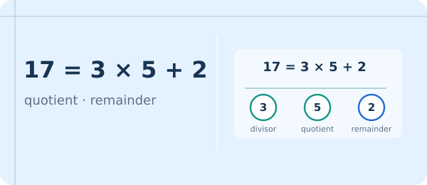
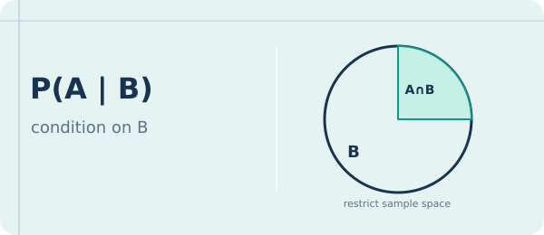

FREE · INTERACTIVE · BUILT FOR LEARNERSReal math.
Real math.
Real understanding.
Short lessons, experiments, and thoughtful practice to help you discover patterns — and see why they work.
Small steps.
Big understanding.
Big understanding.
Visualize · Explore · Solve
Patterns everywhere ↗
Different ideas.
Fresh views.
Fresh views.
Practice · Build · Improve
55guided lessons
12interactive tools
165practice questions
Freeno account needed
Built for curious minds
Math is easier to understand when you can try it.
Clear explanations
Concise lessons, examples, and mathematical reasoning.
Interactive tools
Change numbers and watch mathematical ideas unfold.
Practice & feedback
Work through original problems with hints and solutions.
Learn at your pace
From foundations to advanced undergraduate topics.
The next chapter is yours
View all 55 lessons →Explore what you can learn ✳
Pick an idea that interests you. Learn it, test it, and then experiment.

FoundationsDivisibility & Division AlgorithmWorked example + 3 questions CoreGCD & Euclidean AlgorithmWorked example + 3 questions
CoreGCD & Euclidean AlgorithmWorked example + 3 questions 
CoreConditional ProbabilityWorked example + 3 questions CoreLinear Diophantine EquationsWorked example + 3 questions
CoreLinear Diophantine EquationsWorked example + 3 questions  CoreChinese Remainder TheoremWorked example + 3 questions
CoreChinese Remainder TheoremWorked example + 3 questions  CoreNormal DistributionWorked example + 3 questions
CoreNormal DistributionWorked example + 3 questions Made to explore
The story behind MathBridge →Understand. Experiment. Practice.
MathBridge is a growing student-built collection of free mathematics learning resources.